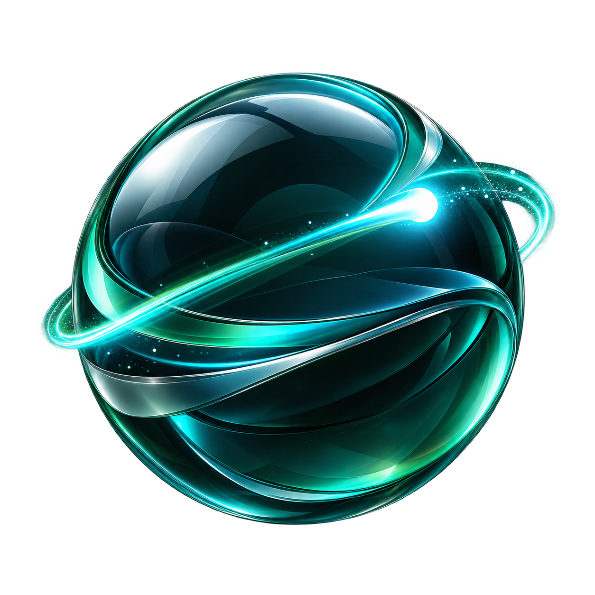

Captured captions
Waiting for a stable captured caption…

On the Fly
Select meeting words, then research, explain, reply, or open a follow-up in webmail. Use Review/edit only when you need more control.
0
- Connect to a supported meeting to see captions.
Captured Moments
Reviewed local images bound to this transcript snapshot.
- No Moments kept for this meeting.
Live Notes
Generate a cited draft, review it, then keep it separately from the transcript.
Rolling notes
Local, extractive updates from new caption batches. Nothing is sent anywhere.
Start when you want local rolling evidence notes.
Rolling revision history
- No rolling updates yet.
Every saved draft must cite caption IDs that exist in the current snapshot.
- No reviewed notes kept for this meeting.
Evidence markers
- No markers for this meeting yet.
Ask this transcript
The reviewed handoff is bound to the transcript snapshot visible now. Keep the answer only after checking every citation.
Saved answers remain separate from the source transcript and require valid caption citations.
- No reviewed answers kept for this meeting.
A DAF-TECH Product